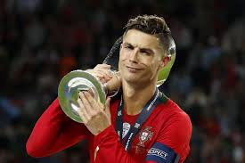

Главная Спорт Успеваемость Олимпиады

Спорт является важной частью моей жизни и оказывает положительное влияние не только на физическое состояние, но и на развитие личных качеств. Регулярные тренировки помогают поддерживать хорошую физическую форму, развивать выносливость, силу, координацию движений и способность работать над достижением поставленных целей. Благодаря занятиям спортом формируется дисциплина, ответственность и умение рационально распределять своё время.
Особое место в моей спортивной деятельности занимает волейбол. Этот вид спорта привлекает меня своей динамичностью, необходимостью быстро принимать решения и важностью командного взаимодействия. Во время игры каждый участник команды выполняет определённую роль, поэтому успех зависит не только от индивидуальных навыков, но и от слаженной работы всех игроков.
Участие в составе сборной колледжа является важным этапом моего спортивного развития. Совместные тренировки и подготовка к соревнованиям позволяют совершенствовать игровые навыки, изучать новые тактические приёмы и получать опыт выступления на различных спортивных площадках. Каждая тренировка требует максимальной концентрации и стремления к постоянному улучшению результатов.
Большой интерес для меня представляют соревнования различного уровня. Участие в городских турнирах позволяет встретиться с сильными соперниками, проверить свои возможности и получить полезный игровой опыт. Каждое соревнование является возможностью продемонстрировать свои навыки, проявить характер и внести вклад в общий результат команды.
Особое значение имеют турниры между колледжами, поскольку они объединяют спортсменов из разных учебных заведений и создают условия для честной спортивной борьбы. Полученные призовые места стали результатом серьёзной подготовки, регулярных тренировок и стремления всей команды к достижению высоких результатов. Подобные достижения мотивируют продолжать работу над собой и ставить новые спортивные цели.
Занятия волейболом помогают развивать множество полезных качеств. Во время игры необходимо быстро анализировать ситуацию, принимать решения, эффективно взаимодействовать с партнёрами по команде и сохранять концентрацию на протяжении всего матча. Эти навыки оказываются полезными не только в спорте, но и в учебной деятельности, а также в повседневной жизни.
Спортивная деятельность способствует развитию уверенности в собственных силах. Постоянная работа над техникой, участие в соревнованиях и преодоление различных трудностей позволяют лучше понимать свои возможности и стремиться к новым достижениям. Каждая победа становится результатом упорного труда, а каждое испытание помогает приобрести ценный опыт.
Кроме спортивных результатов большое значение имеет атмосфера командной работы. Во время тренировок и соревнований формируются навыки взаимопомощи, уважительного отношения к партнёрам и умения действовать в интересах общего результата. Именно поэтому волейбол помогает не только укреплять физическую подготовку, но и развивать коммуникативные качества.
Важной частью тренировочного процесса является работа над техникой выполнения различных элементов игры. Большое внимание уделяется подачам, передачам, приёму мяча, блокированию и взаимодействию игроков на площадке. Постепенное совершенствование этих навыков позволяет повышать уровень подготовки и более уверенно чувствовать себя во время соревнований.
Полученные награды и грамоты являются подтверждением проделанной работы и достигнутых результатов. Они напоминают о необходимости продолжать развиваться, не останавливаться на достигнутом и стремиться к новым успехам. Каждое достижение становится дополнительной мотивацией для дальнейшего совершенствования.
В будущем планирую продолжать активно заниматься волейболом, участвовать в соревнованиях различного уровня и совершенствовать свои спортивные навыки. Считаю, что спорт помогает формировать сильный характер, развивать целеустремлённость и вести здоровый образ жизни. Полученный опыт и приобретённые качества будут полезны не только в спортивной деятельности, но и в дальнейшей учёбе и будущей профессии.